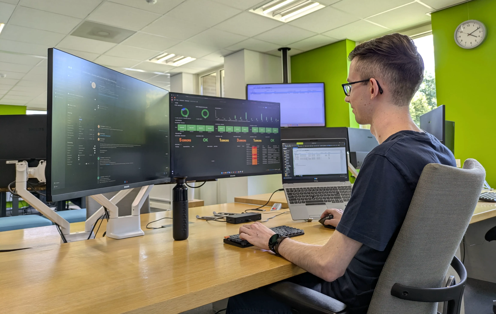

Jordy Hoebergen - Advantive
In het kort
Sinds juni 2025 ben ik werkzaam als Service Engineer bij Advantive in Weert. Advantive is een Microsoft Solutions Partner die organisaties helpt met hun digitale transformatie en innovatieve cloudoplossingen.
Binnen het Managed Services team ben ik verantwoordelijk voor het ondersteunen van diverse klanten en het beheren van hun IT-omgevingen. Na mijn afstudeerstage ben ik direct gestart in deze functie.
Passie, plezier en professionaliteit zijn de drie kernwaarden van Advantive, en met die instelling sta ik dagelijks klaar om onze klanten optimaal te ondersteunen.
2e-lijns support & proactief beheer
Als Service Engineer bij Managed Services ben ik als 2e-lijns het aanspreekpunt voor onze klanten. Hier lossen we complexere incidenten, escalaties en wijzigingsverzoeken op die diepere kennis vereisen van Microsoft-omgevingen.
Naast reactieve support ligt onze focus nadrukkelijk op proactief beheer. We zorgen ervoor dat klantomgevingen continu geoptimaliseerd, veilig en up-to-date blijven. Door preventief te monitoren en knelpunten vroegtijdig te signaleren, minimaliseren we downtime en helpen we klanten het maximale uit hun omgevingen te halen.

Local support op locatie
Daarnaast ben ik ook actief als local support op locatie bij klanten. Hier bied ik ondersteuning aan medewerkers en ben ik het vertrouwde gezicht op de werkvloer voor technische vraagstukken.
Dankzij mijn rol binnen Advantive kan ik klanten op locatie optimaal ondersteunen: ik combineer persoonlijke hulp ter plekke met diepgaande achtergrondkennis van hun centrale IT-infrastructuur. Bovendien kan ik altijd direct terugvallen op de brede expertise van collega's binnen Advantive, waardoor ook complexe uitdagingen snel en effectief worden opgelost.